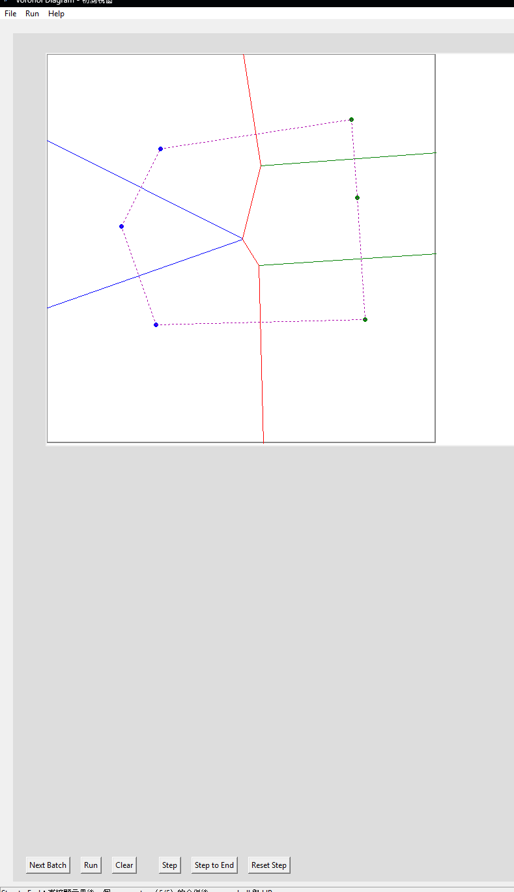

B112040003 張景旭
本軟體之主要目的為：讀取一組或多組二維平面點資料，並計算其 Voronoi Diagram，最後於圖形介面中顯示。以下為資料輸入與輸出之正式規格說明。
軟體支援兩種輸入方式：
當同時存在兩者時，畫面上會以當前畫布內容作為 Voronoi 計算之輸入基準。
輸入檔為純文字檔（.txt, .in, .dat 皆可），格式如下：
n
x1 y1
x2 y2
...
xn yn
n
x1 y1
...
0
規格說明：
n：代表本批資料的點數（整數）。n = 0：代表輸入資料結束。xi yi：代表第 i 個點的座標（浮點數）。# 開頭之註解行。輸出需依字典序排序：
輸出檔為純文字檔，包含兩種資料行：
P x y：畫布中的一個輸入點。E x1 y1 x2 y2：Voronoi Diagram 中的一條邊，使用其兩個端點座標表達。在程式介面中，Voronoi Diagram 的視覺化輸出包含：

.txt 檔。畫布（Canvas）
顯示所有點、邊、以及 Step-by-step 的視覺化元素。
控制列（Control Panel）
包含：
選單列（Menu Bar）
狀態列（Status Bar）
顯示當前動作、訊息或系統狀態。
本章提供本軟體之安裝方式、執行方法、使用流程，以及操作上需注意之要點。此說明文件以「exe 可執行檔版本」為主，使用者無須安裝 Python 或額外套件即可執行。
使用者可直接取得以下檔案： VoronoiProject.exe 此檔案即為完整執行版本，不需額外安裝程式或函式庫。
執行檔本身不依賴外部模組，因此不存在 DLL 或環境變數設定問題。 雙擊： VoronoiProject.exe
即可啟動軟體，
使用者可採下列方式新增點至畫布：
每個點會即時顯示於畫布上。
點數準備完畢後，按下 Run：
結果之邊會立即繪於畫布中。
此功能用來觀察 Divide-and-Conquer 的 合併階段。
按下 Step：
額外按鈕：
選擇 File → Open Input File 後，可使用：
選擇 File → Open Input File 後，可使用：
Load Next Batch
複製程式碼
每次載入一組測資，格式如下：
n x1 y1 x2 y2 ... xn yn
yaml 複製程式碼
n = 0 代表測試結束。
按下： Save Output
複製程式碼
可將畫布目前的結果輸出為純文字檔：
P x y E x1 y1 x2 y2
yaml 複製程式碼
並自動依 lexical order 排序。
Point：平面座標點class Point:
def __init__(self, x: float, y: float):
self.x = float(x)
self.y = float(y)
def __repr__(self):
return f"P({self.x:.3f}, {self.y:.3f})"
def __eq__(self, other):
if not isinstance(other, Point):
return NotImplemented
return self.x == other.x and self.y == other.y
def __lt__(self, other):
"""
Lexical order
"""
if not isinstance(other, Point):
return NotImplemented
if self.x != other.x:
return self.x < other.x
return self.y < other.y
def distance_to(self, other):
"""計算與另一點的距離"""
if not isinstance(other, Point):
raise TypeError("distance_to() 需要 Point 類別作為參數")
dx = self.x - other.x
dy = self.y - other.y
return (dx * dx + dy * dy) ** 0.5
def as_tuple(self):
"""return (x, y) tuple"""
return (self.x, self.y)
代表平面上的一個「站點」（site），即 Voronoi Diagram 的輸入點。
class Edge:
def __init__(self,
start: Point,
end: Point,
left_polygon: Optional[int] = None,
right_polygon: Optional[int] = None):
self.start = start
self.end = end
self.left_polygon = left_polygon
self.right_polygon = right_polygon
def __repr__(self):
return f"E({self.start.x:.3f},{self.start.y:.3f} → {self.end.x:.3f},{self.end.y:.3f})"
def __eq__(self, other):
if not isinstance(other, Edge):
return NotImplemented
return (self.start == other.start and self.end == other.end) or \
(self.start == other.end and self.end == other.start)
def __lt__(self, other):
"""
Lexical order ：
(x1, y1, x2, y2)
x1≦x2 or x1=x2, y1≦y2
"""
if not isinstance(other, Edge):
return NotImplemented
s1, e1 = (self.start, self.end)
s2, e2 = (other.start, other.end)
if s1 != s2:
return s1 < s2
return e1 < e2
def as_tuple(self):
"""回傳 ((x1, y1), (x2, y2))，方便輸出或繪圖"""
return (self.start.as_tuple(), self.end.as_tuple())
def length(self):
"""計算線段長度"""
return self.start.distance_to(self.end)
def is_ray(self, boundary_limit=600):
"""
檢查是否延伸至畫布邊界的射線。
若端點在 [0, boundary_limit] 範圍外則視為射線。
"""
return not (0 <= self.start.x <= boundary_limit and
0 <= self.start.y <= boundary_limit and
0 <= self.end.x <= boundary_limit and
0 <= self.end.y <= boundary_limit)
def has_point(self, p: Point, eps=1e-6):
cross = (p.y - self.start.y) * (self.end.x - self.start.x) - \
(p.x - self.start.x) * (self.end.y - self.start.y)
if not isclose(cross, 0.0, abs_tol=eps):
return False
dot = (p.x - self.start.x) * (self.end.x - self.start.x) + \
(p.y - self.start.y) * (self.end.y - self.start.y)
if dot < 0:
return False
squared_len = (self.end.x - self.start.x) ** 2 + (self.end.y - self.start.y) ** 2
return dot <= squared_len + eps
代表 Voronoi Diagram 中的一條線段（有限邊）。
由兩個 Point 物件構成 start 與 end 端點。
在演算法內部，各種幾何運算會產生或裁切線段，最後匯集成 Voronoi 邊集合：
中垂線與畫布矩形的交點 → 建立 Edge
對邊做 trimming 或 filter → 回傳新的 Edge 列表
對 UI 端來說，只需知道有一組 Edge，即可直接畫在畫布上，達到「計算與顯示分離」的目的。
from dataclasses import dataclass
from typing import List, Optional
@dataclass
class VoronoiDiagram:
edges: List[Edge]
hull: Optional[List[Point]] = None
代表「某一個子問題（子集合點）的 Voronoi 結果」。
欄位說明：
edges：該子集合點的 Voronoi 邊（線段列表）。
hull：該子集合點的 convex hull 頂點序列（Optional，可為 None）。
在 divide-and-conquer 過程中：
每次遞迴呼叫 _build_voronoi(...) 時，都回傳一個 VoronoiDiagram。
merge 階段可同時使用左右子圖的 edges 與 hull 做合併與修剪。
這個包裝類別讓「幾何結果」與「演算法層次」有明確界線，便於日後增加更多資訊（例如：Voronoi cell 結構、無限射線資訊等）。
@dataclass
class MergeStep:
left_edges: List[Edge]
right_edges: List[Edge]
hyperplane_edges: List[Edge]
left_hull: Optional[List[Point]]
right_hull: Optional[List[Point]]
merged_hull: Optional[List[Point]]
median_x: Optional[float] = None
left_sites: Optional[List[Point]] = None
right_sites: Optional[List[Point]] = None
用途說明：
為了支援「Step-by-step」視覺化，在每一層 merge 時額外記錄該層資訊。
欄位意義：
left_edges / right_edges：此層 merge 前，左右子圖保留下來的 Voronoi 邊。
hyperplane_edges：由左右點群產生的「分隔鏈」（dividing hyperplane）邊集合。
left_hull / right_hull：左右子圖各自的 convex hull（給 UI 畫虛線使用）。
merged_hull：本層 merge 完成後的整體 convex hull。
median_x：此層分割使用的 median 線之 x 座標（理論上可畫出分割線）。
left_sites / right_sites：此層 merge 涉及的左右站點集合。
UI 在按 Step 時，會依序讀取 MergeStep：
先畫左、右 Voronoi + 左右 hull
再畫 merged hull
同時上色左右點
整體演算法採用 Divide-and-Conquer（分而治之）方式建構 Voronoi Diagram。
基本概念如下：
先把所有輸入點依 X 座標排序（若 X 相同再依 Y）
排序後可以用一刀將點分成左右兩半，並進一步遞迴處理。
Divide（分割）階段
Merge（合併）階段
本專題的 Divide 方式非常簡單：
輸入點先排序
排序後的序列被視為一維的可分割序列。
取中間切點（median）進行分割
以遞迴方式處理左半與右半
Merge 階段可分為四個核心步驟：
(x, y) 排序對左半所有點 L
對右半所有點 R
計算它們的中垂線，並與畫布矩形求交。
這會得到許多候選線段。
對每條候選線段，使用密集取樣與二分逼近法（binary refinement）：
當 HP edge chain 建構完成後，左右子圖的邊會各自被裁切：
最後：
三者合併成本層 Voronoi 結果。
當左右子圖合併後，所有站點的凸包也能被一併重新計算：